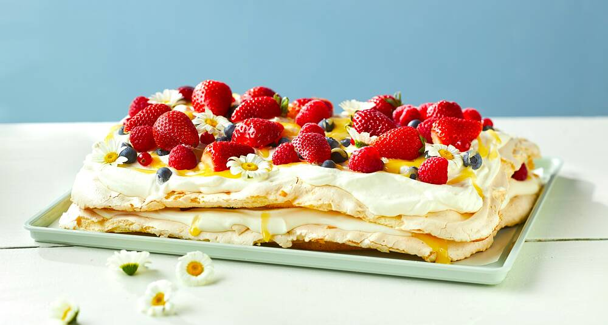
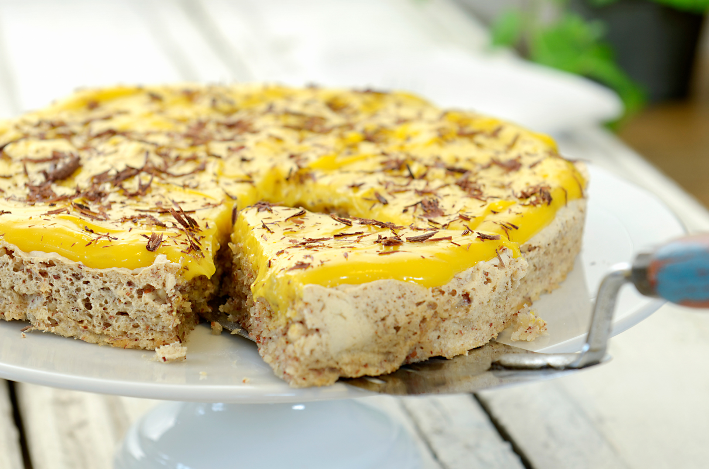
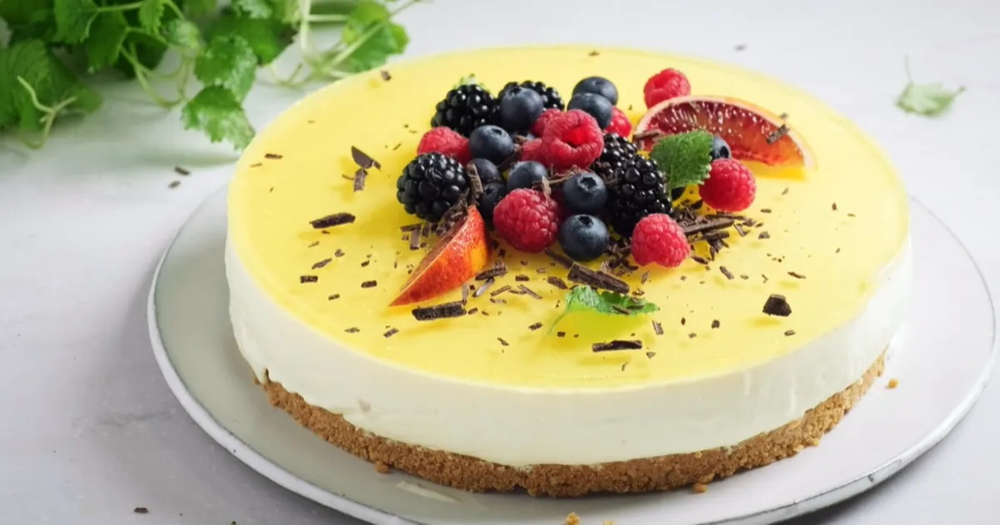
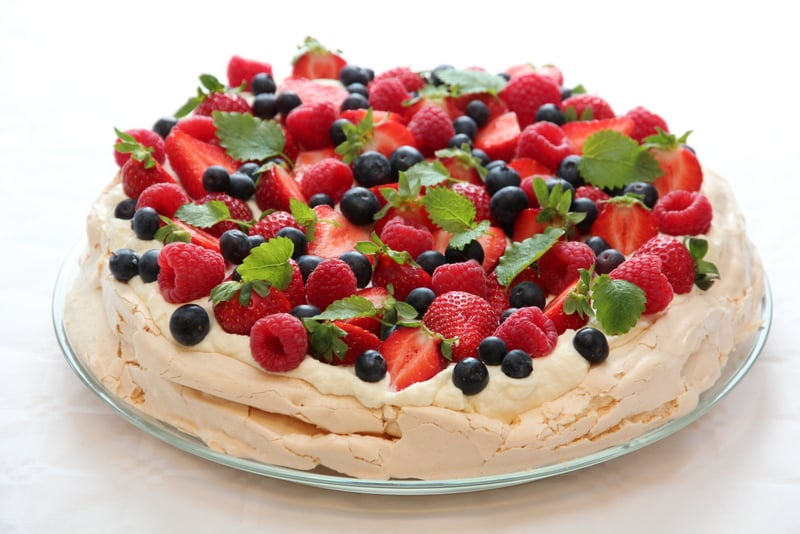
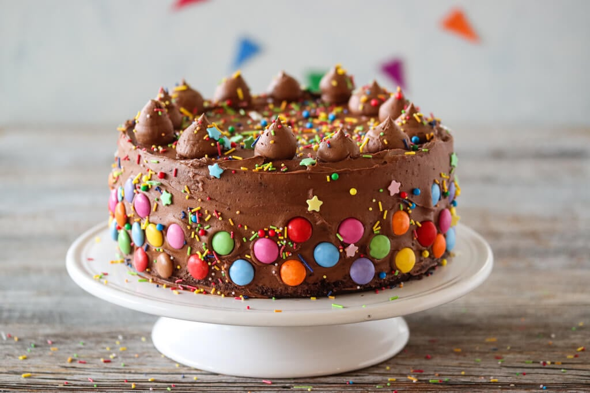
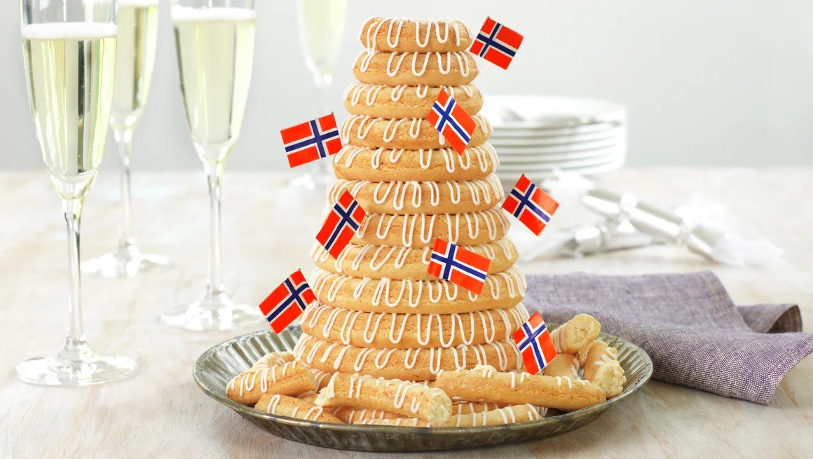

Kvæfjordkake(Verdens Beste)
Som Norges nasjonalkake representerer du harmoni og tradisjon. Du er en person som trives best når alt er «på stell», og du har en unik evne til å balansere det sprø (marengsen) med det myke (vaniljekremen) i livet.
Horoskop: En etterlengtet feiring står for døren. Stol på dine klassiske verdier, de vil føre deg til suksess.

Suksessterte (Gul kake) – Den gylne optimisten
Med din forkjærlighet for den gule kremen er du en person som lyser opp rommet. Du er tålmodig (som mandelbunnen) og har en rik, dyp personlighet som folk setter pris på når de først blir kjent med deg.
Horoskop: Din positive utstråling vil tiltrekke seg nye muligheter denne måneden. Hold fast på det som er ekte og næringsrikt.

Ostekake – Den moderne livsnyteren
Du foretrekker en frisk og kontemporær vri på livet. Du er sannsynligvis kreativ, glad i reiser og setter pris på estetikk. Du liker at ting er «smooth», men trenger alltid en solid bunn å stå på.
Horoskop: En frisk endring er i vente. Ikke vær redd for å prøve en ny «topping» på tilværelsen – litt syrlighet kan gjøre helheten perfekt.

Pavlova – Den fargerike selskapsløven
Som 17. mai-favoritten er du festens midtpunkt. Du er luftig, lett til sinns og elsker å omgi deg med farger og mennesker. Du blomstrer i sosiale lag, men kan være litt skjør hvis presset blir for stort.
Horoskop: Invitasjonene vil strømme inn. Husk å nyte øyeblikket før «marengsen knuser» – balanse mellom hvile og fest er nøkkelen.

Sjokoladekake – Den trygge og lidenskapelige
Du går for det som alltid fungerer. Du er lojal, varm og en person folk søker til for trøst. Bak det mørke ytre skjuler det seg ofte en dyp lidenskap og en intens livsglede.
Horoskop: Du vil finne stor glede i de små, nære tingene. En gammel venn vil ta kontakt og minne deg på hvorfor det enkle ofte er det beste.

Kransekake – Den stødige tradisjonalisten
Du er bygget av lag på lag med erfaring og visdom. Du er seig, utholdende og står støtt i stormen. Du er den som holder familien og tradisjonene sammen gjennom generasjoner.
Horoskop: Din utholdenhet vil endelig bære frukter. En stor milepæl nærmer seg, og du er mer enn klar for å stå på toppen av tårnet.
